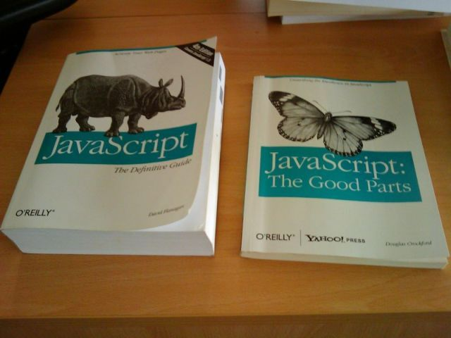
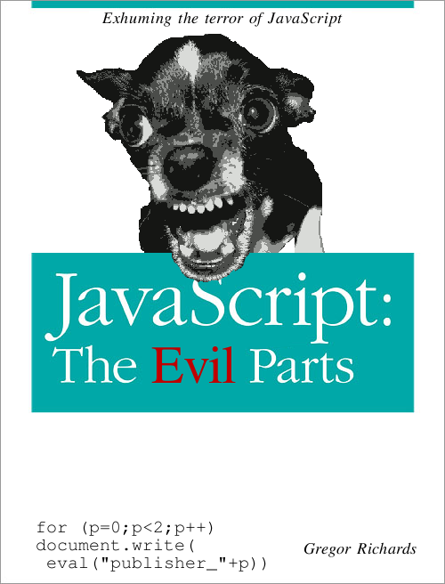
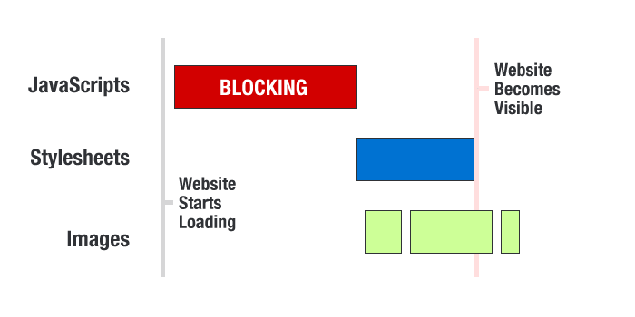

JavaScript @ CloudFlare
an intervention
Hi I'm Chris
Some projects I work on at CloudFlare:
- Rocket Loader
- CloudFlareJS
- Image Optimization, Resource Preloading, Tracking..
First, a cheap meme:

Another perspective:
And again:

Seriously?
Beards
John McCarthy (Lisp), Dennis Ritchie (C), Bjarne Stroustrip (C++), James Gosling (Java), Guido van Rossum (Python), Brendan Eich (JavaScript)
JavaScript is..
- ..not a great language
- ..not going away soon
- ..something we're tyring to improve at CloudFlare
Meet the lowly identifier
foo
> foo
Reference Error: foo is not defined
> var foo
undefined
> foo
[0, 1, 2, 3, 4, 5].forEach(
function() {
// Do stuff..
}
);
var foo
undefined
Truthiness and Falsiness
// Falsey values:
// false, 0, undefined, null, NaN, ''
var foo = '';
if(foo)
console.log("This sentence is never spoken.");
// Truthy values:
// Anything that is not a falsey value
var bar = 100;
if(bar)
console.log("Bar is truthy, so consider this logged.");
Falsey or not
> NaN == undefined
false
> null == undefined
false
> undefined == null
true
What to do?
Use === instead of ==
Clever type coercion
Evidence of cleverness in JavaScript: the + operator
- Adds numbers.. AND concatenates strings
- Not a number? Not a string? Converted automatically.
- Chaos ensues
Basic arithmentic
> 1 + 1
2
> 1 + " + " + 1
"1 + 1"
> "1 + 1 = " + 1 + 1
"1 + 1 = 11"
Advanced maths
> [] + []
""
> [] + {}
"[object Object]"
> {} + {}
NaN
(wat)
Why do we use JavaScript?
Some topical quotes
"JavaScript won because it's the best terrible language ever made."
"Javascript is the worst language ever to be deployed on every major browser in the world"
JavaScript is in your browser
Everything is built with JavaScript
- Photo galleries
- Facebook feeds & Twitter timelines
- Likes, Plus Ones, Nyancats
JavaScript is slow
- JavaScript does not run as fast as native code
-

- JavaScript downloading "blocks" other website resources
- JavaScript EXECUTION "blocks" other website resources
Complicating things
JavaScript can be used to load more JavaScript!
What is this "blocks" thing?
When JavaScript downloads and runs, it prevents other parts of the page (including other JavaScript) from downloading and running.
A contrived HTML document
<!DOCTYPE html>
<html>
<head>
<title>Awesome Webpage</title>
<script type="text/javascript" src="/some/javascript.js"></script>
<link rel="stylesheet" href="/some/stylesheet.css" />
</head>
<body>
<h1>Awesome webpage header!</h1>
</body>
</html>
The impact of blocking
Enter The Rocket
We built Rocket Loader to make JavaScript not 'block'
"The plan"
by Steve Souders
- Break all script tags to stop them from loading
- While the page loads, preload scripts asynchronously
- ???
- Allow the page to load completely
- Step through all broken scripts and "fix" them so that they execute
- Profit
This is really hard
- How do you break scripts before they start downloading?
- How do you preload scripts without executing them?
- document.write
A word on document.write
DONT
CloudFlare domination strategy
- NGINX "breaks" all scripts
- PHP backend gives us same-domain AJAX ("the bag")
- JavaScript client library ("Rocket") handles execution
How do you "break" scripts?
Before:
<script type="text/javascript" src="/javascripts/jquery.js"></script>
<script type="text/javascript" src="/javascripts/cornify.js"></script>
<script type="text/javascript">
$(function() {
alert('am i doin it rigjt?');
});
</script>
After:
<script type="text/rocketscript" data-rocketsrc="/javascripts/jquery.js"></script>
<script type="text/rocketscript" data-rocketsrc="/javascripts/cornify.js"></script>
<script type="text/rocketscript">
$(function() {
alert('am i doin it rigjt?');
});
</script>
CloudFlare's (sexy) bag
Also known as the JavaScript proxy.
Preload JavaScript via AJAX
CloudFlare sets up a same-domain AJAX endpoint
http://www.example.com/
has "the bag" at
http://www.example.com/cdn-cgi/pe/bag
We can ask "the bag" for JavaScript
GET /cdn-cgi/pe/bag?r[]=/javascripts/some.js&r[]=/javascripts/another.js&r[]=/javascripts/final.js
In other words, "give me the following scripts:"
- /javascripts/some.js
- /javascripts/another.js
- /javascripts/final.js
"The bag" sends JS back as text
--foobar
Bag: 257|222|-1|200|text/bag-manifest
0:http://www.example.com/javascripts/some.js
1:http://www.example.com/javascripts/another.js
2:http://www.example.com/javascripts/final.js
--foobar
Bag: 79|39|0|200|application/x-javascript|7200
function small1(bleh) {
return bleh;
}
--foobar
Bag: 79|39|2|200|application/x-javascript|7200
function small2(bleh) {
return bleh;
}
--foobar
Bag: 79|39|1|200|application/x-javascript|7200
function small3(bleh) {
return bleh;
}
--foobar--
A big advantage
All your JavaScript is loaded in one request
Text can be stored in localStorage and executed in a controlled way
Stylesheets
coming to a bag near you
Finally
The page is loaded
The JavaScript is precached
Time to rocket
Rocket Loader executes scripts
Page order must be maintained
All page events are simulated
Page state is masked
Scripts are difficult to manage
They look at themselves (introspection)
They insert other scripts
They call document.write
Handling curious scripts
Trick them into thinking the world is different.
Page events
Simplified example:
window.addEventListener = function(type) {
if(type == 'load')
deferHandler(arguments);
else
listenNormally.apply(window, arguments);
}
Introspection
Simplified example:
document.getElementsByTagName = function(type) {
if(type == 'script')
return listOfFakeScripts;
else
return normalListOfElements;
}
More on document.write
- Intended for insertion while HTML is parsing
- If it happens late, it kills the page
- It happens EVERYWHERE (ads)
Rocket overrides document.write
Simplified example:
document.write = function(out) {
console.log("Appending to document.write buffer: \n" + out);
parser.parseChunk(out);
};
Rocket has a parser
- Raw HTML is passed to parser
- Parser generates an abstract representation
- AST is sent back to vile script from whence it came
When scripts have babies
Dynamically created scripts are 'bagged' on the fly.
With document.write
Scripts created with document.write are added to the queue after their parent.
With document.createElement
Scripts created with document.create element are added to the end of the queue.
The final result
A short bit on CFJS
- Born from Rocket Loader
- Open source & backwards compatible to IE6
- Platform for loading / sandboxing JS apps the right way
- Works with or without the bag
- We use it for apps and all internal JS projects
- Learn more about CloudFlareJS
- Learn more about CommonJS
A quick demo
// Insert CFJS
try{window.CloudFlare||function(){var a=window.document,b=a.createElement("script"),a=a.getElementsByTagName("script")[0];window.CloudFlare=[];b.type="text/javascript";b.async=!0;b.src="//ajax.cloudflare.com/cdn-cgi/nexp/cloudflare.js";a.parentNode.insertBefore(b,a)}()}catch(e$$5){try{console.error(e$$5.message)}catch(e$$6){}};
// Load important code
CloudFlare.require(['http://www.cornify.com/js/cornify.js'], function() { for(var i = 0; i < 50; i++) cornify_add(); });
Looking forward
- Mirage: automatically optimizing images
- CSS loading through Rocket Loader
- CloudFlare Apps
- CFJS and Advertising... and YOU